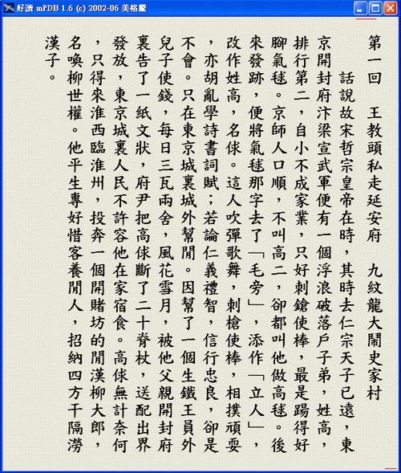

|
|
|
|
|
|
在直式預覽模式下，您可輕鬆的閱讀您正在製作的書，發現有需要修改的地方，可立即切換回編輯視窗，隨手修改。
直式預覽的操作方式和好讀相同，唯一的差別是按正中，返回編輯視窗。

使用滑鼠或鍵盤的操作方式：
(下一章) (章數) (上一章)
按左上角 按中上 按右上角
或 PgDn 或 PgUp
(編輯)
按正中
按左下角 按右下角
或 ←↓ 按中下 或 →↑
(下一頁) (頁數) (上一頁)
若您的滑鼠有滾輪，亦可用滾輪上下頁。
相關說明
1) mPDB 轉檔設定
2) 快速製書
3) 檔案快速整理工具
4) 檔案編輯視窗
5) 字盤設定
6) 直式預覽(本頁)
7) 上網找書的訣竅
回 mPDB 主頁
|
|
|
|
|
|
|
|